🥩 LA CARNE

| LA CARNE | I PEZZI | |
|---|---|---|
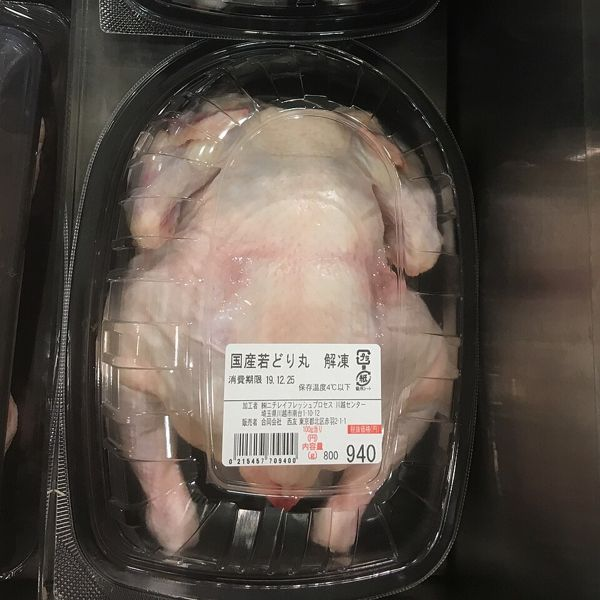 | IL POLLO | IL PETTO, LA COSCIA, LE ALI |
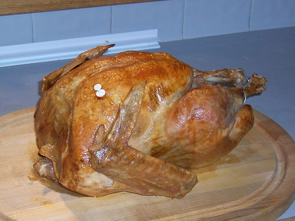 | IL TACCHINO | |
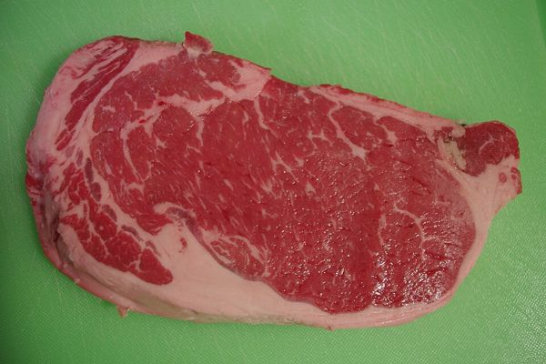 | IL MANZO / IL VITELLO | LA BISTECCA, IL MACINATO, LO SPEZZATINO |
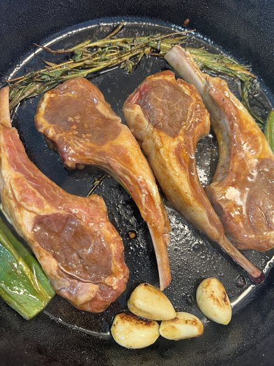 | L'AGNELLO | LE COSTOLETTE |
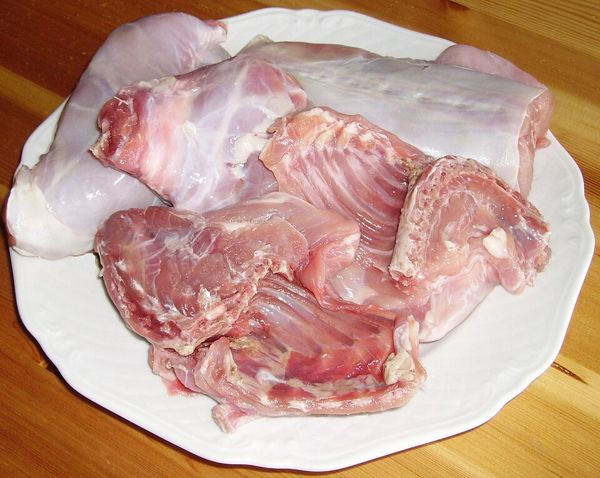 | IL CONIGLIO | |
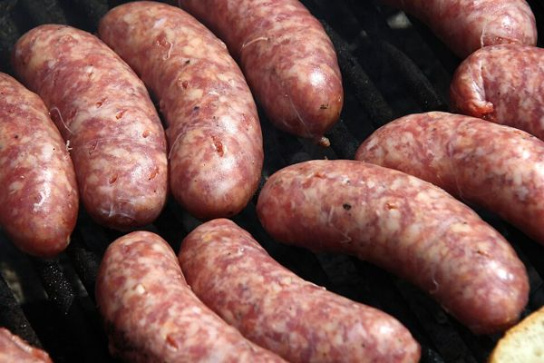 | LA SALSICCIA | DI POLLO, DI MANZO O DI MAIALE |
☪️ CERCHI LA CARNE HALAL? A BARI CI SONO MACELLERIE HALAL. CHIEDI: «È CARNE HALAL?»
🐟 IL PESCE

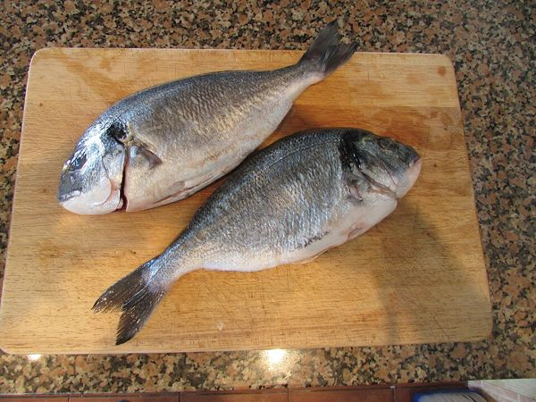
L'ORATA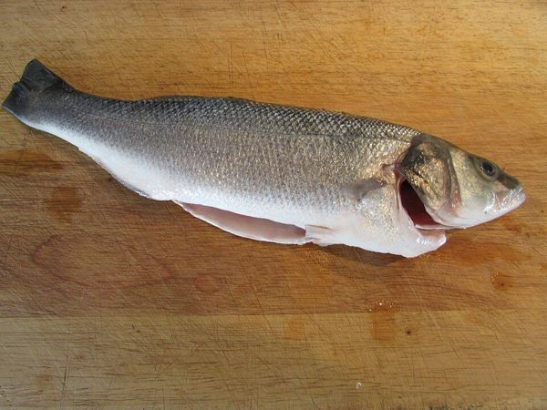
LA SPIGOLA (IL BRANZINO)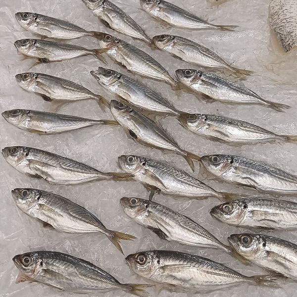
LE ALICIPICCOLE, SI FRIGGONO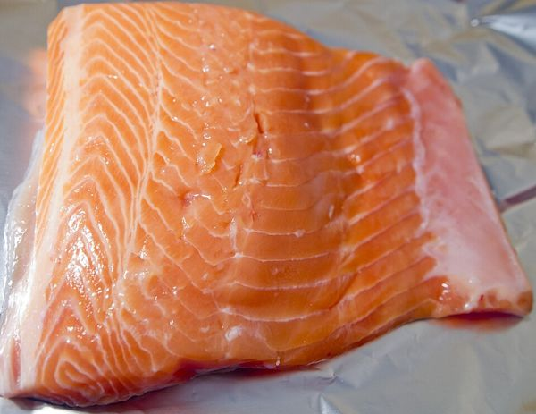
IL SALMONEROSA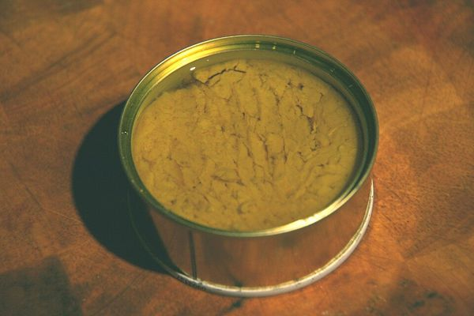
IL TONNOANCHE IN SCATOLA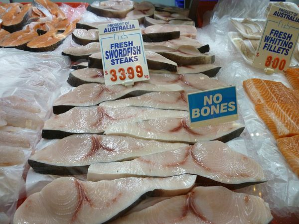
IL PESCE SPADA🍝 LA PASTA

| CHE PASTA? | I NOMI |
|---|---|
| LUNGA | SPAGHETTI, LINGUINE, TAGLIATELLE |
| CORTA | PENNE, FUSILLI, FARFALLE, MACCHERONI, CONCHIGLIE |
| RIPIENA | RAVIOLI, TORTELLINI (DENTRO C'È CARNE O FORMAGGIO) |
| AL FORNO | LASAGNE |
| DI PATATE | GNOCCHI |
| DI BARI 💙 | ORECCHIETTE: CON LE CIME DI RAPA! |
☕ I CAFFÈ

 IL CAFFÈ (ESPRESSO)PICCOLO E FORTE
IL CAFFÈ (ESPRESSO)PICCOLO E FORTE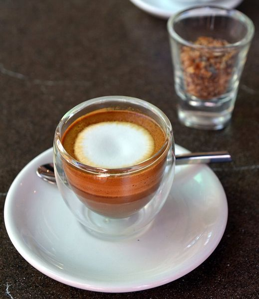
IL CAFFÈ MACCHIATOCON UN PO' DI LATTE CALDO O FREDDO💧IL CAFFÈ LUNGOCON PIÙ ACQUA
🔻IL CAFFÈ RISTRETTOCON MENO ACQUA, PIÙ FORTE
☕☕IL CAFFÈ DOPPIODUE CAFFÈ IN UNA TAZZA
🚫IL DECAFFEINATO (DECA)SENZA CAFFEINA